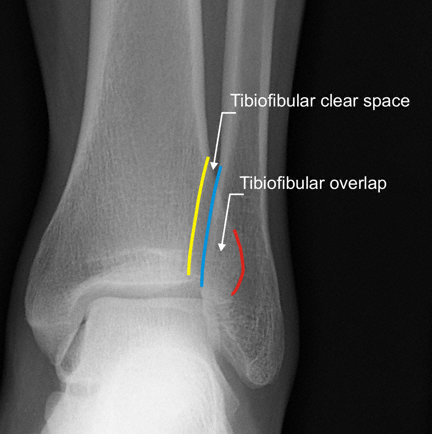
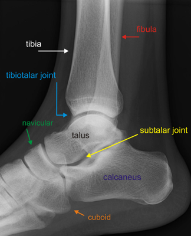
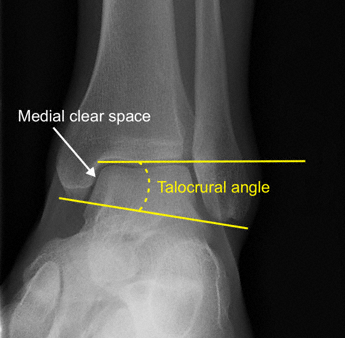

Imaging
Radiographs
- AP, lateral and mortise views of the ankle are standard examinations
- AP:
- Tibiofibular overlap: < 10 mm is abnormal and implies syndesmotic injury
- Tibiofibular clear space: > 5 mm is abnormal and implies syndesmotic injury

Normal AP ankle
- Lateral:
- Identify posterior malleolus and anterior talar avulsion fractures
- Talar dome should be centered and congruous under the tibial plafond

Normal lateral ankle
- Mortise:
- Taken with foot in 20° of IR
- Medial clear space: > 4 mm is abnormal and indicates lateral talar shift (deltoid rupture)
- Talar tilt: distal tibial articular surface should be parallel with superior talar articular surface
- Difference of > 2° suggests talar tilt and ligamentous disruption
- Talocrural angle: angle subtended by intermalleolar line (connecting distal-most points of both malleoli) and distal
tibial articular surface should be between 8°-15°
- A smaller angle indicates fibular shortening
- Tibiofibular overlap: < 1 mm implies syndesmotic disruption

Normal ankle mortise
- Stress view:
- Performed by applying ER force to the ankle with foot dorsiflexed
- Widening of the syndesmosis (decrease in tibiofibular overlap) indicates syndesmotic injury
- Widening of the medial clear space indicates deltoid ligament injury
- CT: may be indicated for complex fractures
- Can detect impaction injuries to the plafond
- Impaction of the anteriomedial or anteriolateral corners is a poor prognostic sign
- MRI: can be used to evaluate subtle or stress fractures as well as ligament, capsule and tendon injuries